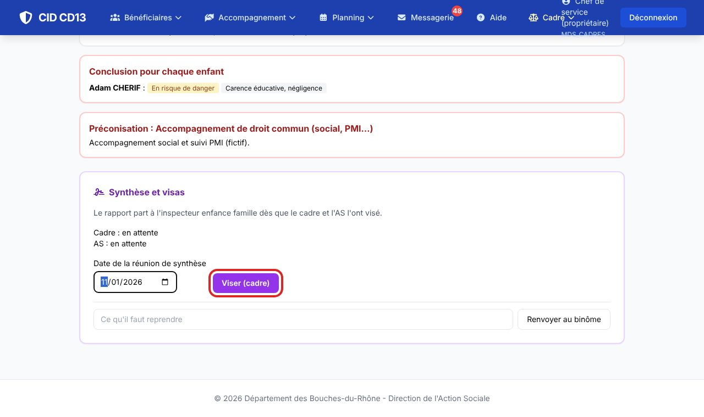
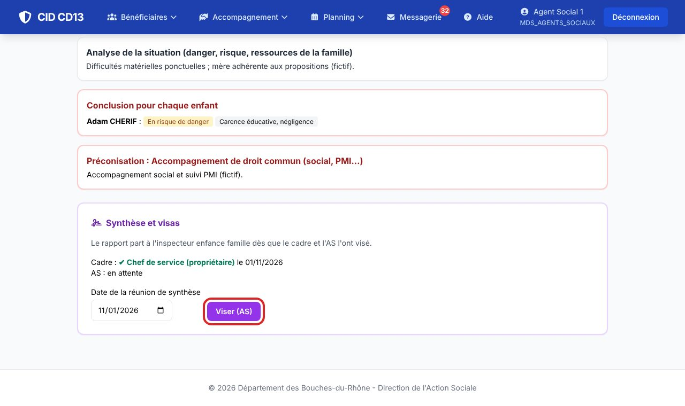
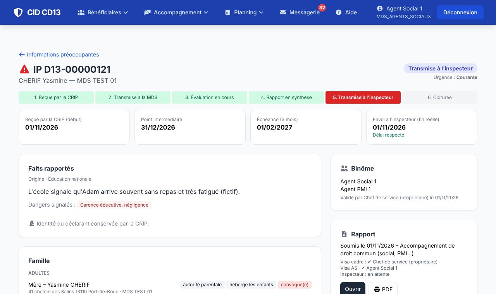

1Visa du cadre

- Ouvrez le rapport soumis. Indiquez la date de la réunion de synthèse et cliquez sur Viser (cadre).
- Le rapport doit être repris ? Écrivez ce qu'il faut reprendre et cliquez sur Renvoyer au binôme.
2Visa du binôme


- Un membre du binôme ouvre le rapport et clique sur Viser (AS).
- Dès que les deux visas sont posés, l'IP est transmise à l'inspecteur, qui est prévenu. La date d'envoi est la fin réelle de l'évaluation (délai respecté ou dépassé).
Bon à savoir
- Le rapport s'imprime à tout moment (bouton Imprimer (PDF)).
Cliquez sur une image pour l'agrandir. Le cadre rouge montre où cliquer ou quoi remplir. Toutes les données affichées sont fictives.